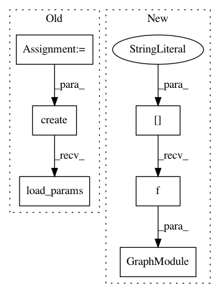

6b5694f0f2941fb9e8fa510011e3caeb03056b4e,tutorials/get_started/relay_quick_start.py,,,#,62
Before Change
////////////////////////////////////////////////////////////////////////////////////////////////////////
// load the module back.
loaded_json = open(temp.relpath("deploy_graph.json")).read()
loaded_lib = tvm.runtime.load_module(path_lib)
loaded_params = bytearray(open(temp.relpath("deploy_param.params"), "rb").read())
input_data = tvm.nd.array(np.random.uniform(size=data_shape).astype("float32"))
module = graph_runtime.create(loaded_json, loaded_lib, ctx)
module.load_params(loaded_params)
module.run(data=input_data)
out_deploy = module.get_output(0).asnumpy()
// Print first 10 elements of output
After Change
ctx = tvm.gpu()
data = np.random.uniform(-1, 1, size=data_shape).astype("float32")
// create module
module = graph_runtime.GraphModule(lib["default"](ctx))
// set input and parameters
module.set_input("data", data)
// run
module.run()
In pattern: SUPERPATTERN
Frequency: 3
Non-data size: 6
Instances
Project Name: apache/incubator-tvm
Commit Name: 6b5694f0f2941fb9e8fa510011e3caeb03056b4e
Time: 2020-09-16
Author: tqchen@users.noreply.github.com
File Name: tutorials/get_started/relay_quick_start.py
Class Name:
Method Name:
Project Name: apache/incubator-tvm
Commit Name: 6b5694f0f2941fb9e8fa510011e3caeb03056b4e
Time: 2020-09-16
Author: tqchen@users.noreply.github.com
File Name: tests/python/unittest/test_target_codegen_blob.py
Class Name:
Method Name: test_synthetic
Project Name: apache/incubator-tvm
Commit Name: 6b5694f0f2941fb9e8fa510011e3caeb03056b4e
Time: 2020-09-16
Author: tqchen@users.noreply.github.com
File Name: tests/python/relay/test_cpp_build_module.py
Class Name:
Method Name: test_basic_build